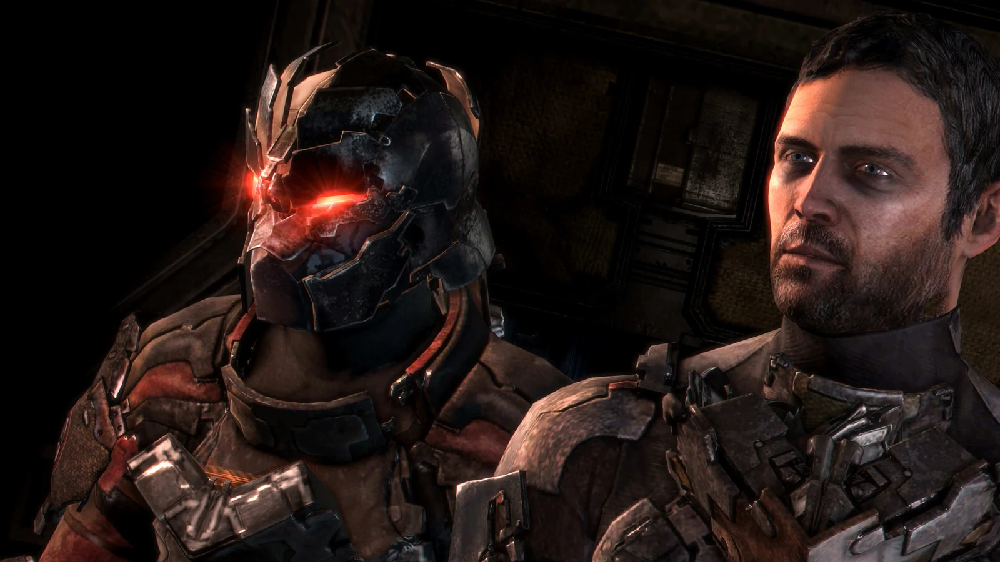

ARM64 · №52
Android
Мобильный лаунчер, сенсорная раскладка, профили управления и поддержка XInput. Без необходимости в x86-эмуляторе.
- Система
- Android 10+
- Графика
- GLES 3.x / Vulkan
- Звук
- AAudio
- Артефакт
- ds3port.apk
Неофициальный порт оригинальной PC-версии Dead Space 3 на Android и Linux. Статическая рекомпиляция в C с общим рантаймом и нативной сборкой под ARM64 и x86-64.
Порт использует данные оригинальной игры. Выбери свою систему и узнай, что нужно для запуска.
Мобильный лаунчер, сенсорная раскладка, профили управления и поддержка XInput. Без необходимости в x86-эмуляторе.
Десктопный лаунчер с настройками рендера, звука и оконной системы. Общая с Android база рекомпилированного C-кода.

Айзек Кларк и Джон Карвер в оригинальной игре 2013 года.
Официальная галерея EA© Electronic Arts и её правообладатели. Логотип: SteamGridDB / CluckenDip.Статическая рекомпиляция и платформенный рантайм вместо запуска Windows-версии через Wine.
Один набор C-файлов компилируется отдельно для каждой архитектуры. Вызовы используемых игрой интерфейсов реализованы внутри рантайма. Основа — Mass Effect port by WALM.
Vulkan и OpenGL ES. На Android можно использовать системный драйвер или совместимый ARM64 Vulkan ICD.
Лимит FPS, GEARMASS, язык игры RU/EN, сохранение профилей; сенсорное управление и XInput на мобильной платформе.
Результаты из README проекта. Проверки запуска не означают полного прохождения игры.
Контроль запуска Linux: Wayland и X11 с Vulkan показали 400/400 кадров.
VULKAN / WAYLAND + X11Инструкции рассчитаны на локальную сборку и оригинальные файлы игры.
Нужна подписанная локальная сборка ds3port.apk №52 и устройство ARM64 на Android 10 или новее.
Скопируй оригинальную PC-версию на устройство и укажи каталог в лаунчере. На Android 11+ предоставь необходимый доступ к файлам.
Начни с системного GLES. Для Vulkan используй системный или совместимый standalone ARM64 ICD.
Настрой сенсорное управление или XInput. Первый запуск может включать компиляцию шейдеров.
GNU make, NDK r27c, JDK 17, SDK Platform 34, Build Tools 34.0.0, zip, локальные входы и существующий ключ подписи.
KEYSTORE=/путь/к/ключу.keystore ./build-android.shРезультат: ../build-output/android/ds3port.apk
Linux x86-64, SDL2 2.26+, рабочий драйвер Vulkan или GLES/EGL и поддерживаемый звуковой выход.
cd linux
./ds3-launcherВыбери папку оригинальной игры и отдельную существующую папку профиля.
По умолчанию Wayland / Vulkan / PipeWire. Можно выбрать X11, GLES, PulseAudio или ALSA. Последний лог — ds3-last.log.
GNU make, C-компилятор, pkg-config, SDL2 ≥ 2.26, Python 3 и локальные входы проекта.
./build-linux.shРезультат: ../build-output/linux/ds3-launcher